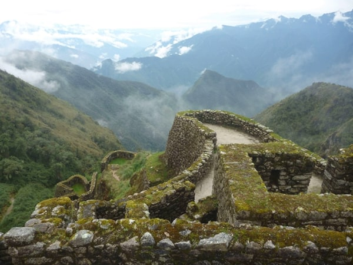

High ruins, running stone baths, and cloud seas — Phuyupatamarca is Day 3’s hydraulic showpiece on the classic Inca Trail.

Phuyupatamarca (also Phuyupatamarka / Puyupatamarca) is a high Inca complex on Day 3 whose Quechua name is widely glossed as “town above the clouds.” On misty days the nickname explains itself: cloud fills the valleys while stone platforms sit in clear air above.
Our registry lists about 11,812 ft (3,600 m). Other guides place the area in a similar high band (sometimes nearer ~3,650–3,670 m). Small spreads are normal.
The signature feature is a set of ritual baths / fountains fed by channels. In the wet season, water often still runs through carved basins — one of the trail’s best “Inca engineering still working” moments. Popular sources disagree on exact bath counts (commonly five or six); we describe a compact ceremonial water sequence rather than locking one number.
Phuyupatamarca comes after the Sayacmarca sector and before the long descent toward Wiñayhuayna (Camp 3). Some itineraries can overnight higher when Wiñay Wayna is full; ask your operator which camp your permit/schedule uses.
#phuyupatamarca. Image assets on this site use the historic filename spelling puyupatamarca.
Name, hydraulic character, and Day 3 role are stable across trek references. Building inventories and bath counts vary by author.
Our interactive Mapbox tour follows GPS collected on the classic Inca Trail — fly through this stop and the full route to Machu Picchu.